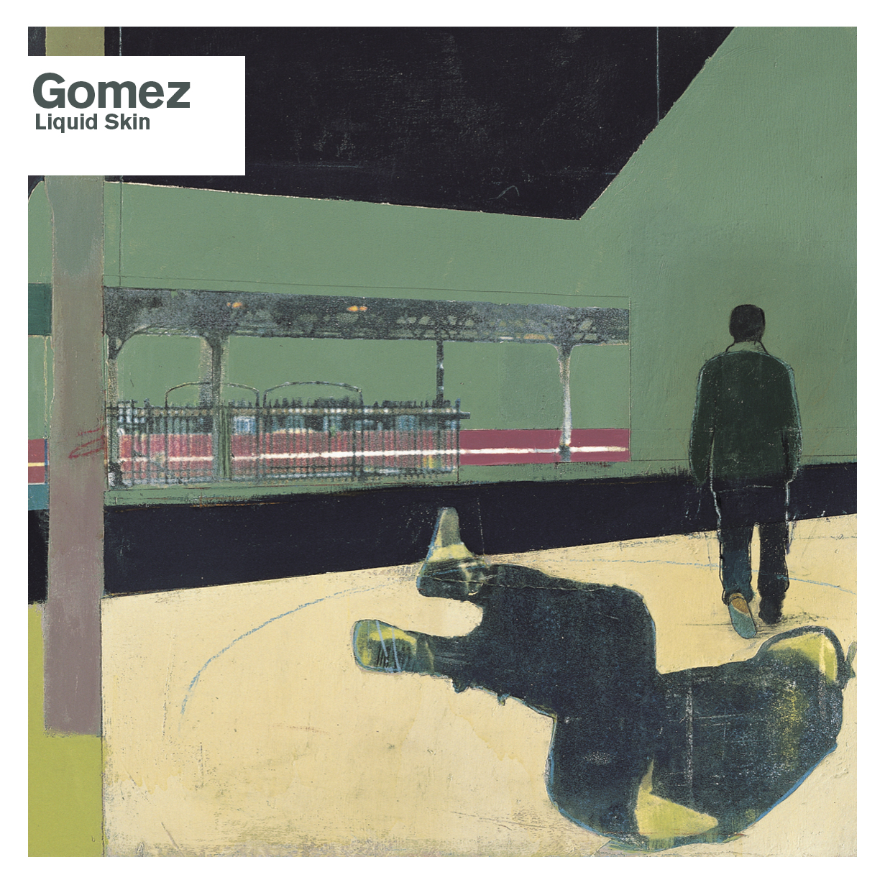

Liquid Skin
Gomez
About The Album
Liquid Skin has a complete and cohesive feel that is timeless. If you knew nothing of this record or this band you'd struggle to place it on a time-line or even give it a country of origin.
Read More
Even though the band had moved on from the four-track recordings that brought them their initial success they still wanted to retain some of those "low-key" elements on the new record. The musical maturity and ease with which the band transferred their skills to the studio environment is quite astonishingly displayed on 'Liquid Skin'.
'Bring It On' is one of the stunning testaments to that train of thought. The laid-back, soulful, rasping vocal, funky breakdown and irresistible hook make it an album highlight then and now. Ian Ball says that he wanted to make the album as "wild" and "varied" as possible, "something that was a studio smorgasbord". He says "We'd sample everything we could" and when you listen back to 'Liquid Skin' twenty years on you can't help but be blown way by its sound.
The smooth layered vocals on the Paris inspired 'We Haven't Turned Around', the seasick song with Tom's Pixies vocal 'Fill My Cup', and the reflective post break-up trauma of 'Rosalita' display the variety and creativity that is found throughout the album.
The close-out track to the original album, 'Devil Will Ride', is where the band did not hold back, throwing everything into the vocoder enhanced mix including backing vocals, orchestration and brass just for good measure. The 7m epic remains a triumphant end to a cracking album.
Album information via Contact Music: Gomez - Liquid Skin (20th Anniversary Edition) Album Review.
Track Listing
- Hangover
- Revolutionary Kind
- Bring It On
- Blue Moon Rising
- Las Vegas Dealer
- We Haven't Turned Around
- Fill My Cup
- Rhythm & Blues Alibi
- Rosalita
- California
- Devil Will Ride